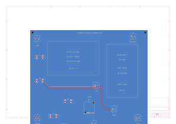

Routed circuit review · 3 October 2026 · 200 × 180 mm · two copper layers
Circuit PDFCopper routingKiCad PCB fileConnector scheduleRelease requirements

| Branch | Path |
|---|---|
| Raspberry Pi | Protected NOCO input → F1 → J3 → mounted EP-0225 → USB-C → Pi |
| Kinect v2 | Input → F2 → J4 → DDR-60G-12 → J5 → J6 → Kinect adapter |
| Arm | Input → J2 external stop contact → F3 → J7 → Adeept controller VIN |
| Auxiliary 5 V | J2 switched return → F4 → Pololu U3 → J8 → audio / pan-tilt |
| T12 base | Separate original battery and dock; its drive stop is still unresolved |
Module outlines reserve space. The Pi converter and DIN-rail converter still need their mechanical attachment details. J2 has two positive terminals; it has no ground terminal.
Use r10 for the converter arrangement. The older system drawing has not yet been fully reconciled with this carrier and is not a final pin-by-pin robot wiring release.